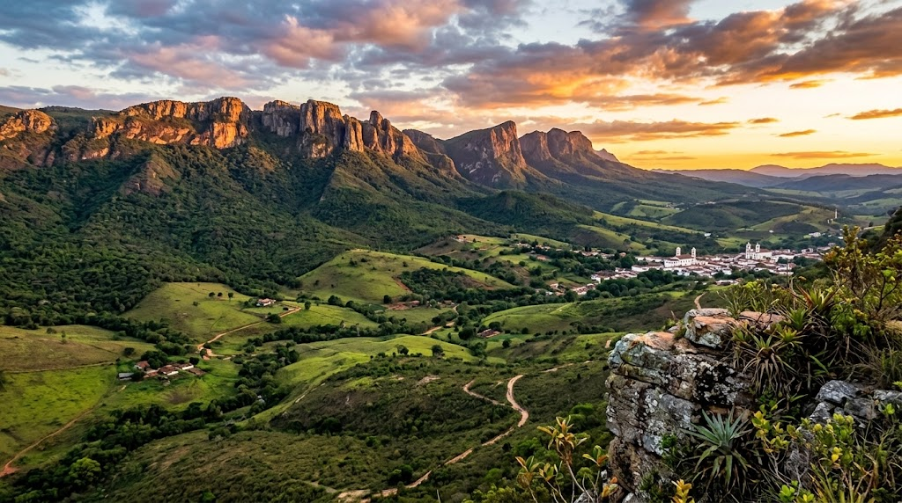

01 / Cidade histórica
Tiradentes
Arquitetura colonial, patrimônio, cultura e tradições locais em uma cidade que convida a caminhar sem pressa.
Explorar Tiradentes ↗Explore cidades históricas e caminhos de natureza com quem conhece os encantos da região.
Entre ruas de pedra, arquitetura, sabores mineiros e paisagens da Serra de São José, cada passeio abre espaço para viver Minas no seu ritmo.
Arquitetura colonial, patrimônio, cultura e tradições locais em uma cidade que convida a caminhar sem pressa.
Explorar Tiradentes ↗
História, igrejas, construções e tradições culturais que revelam diferentes camadas da identidade mineira.
Conhecer a cidade ↗
Trilhas, mirantes e paisagens para contemplar a natureza, conforme o roteiro e as condições de visitação.
Descobrir a travessia ↗Arquitetura, sabores, histórias e paisagens se encontram em experiências pensadas para aproximar você da região.
Conheça a Bora Lá UAI ↗Uma perspectiva próxima sobre os destinos e a região.
Converse com Rafael para organizar sua experiência.
Descubra diferentes formas de viver Minas Gerais.
Acesse as avaliações publicadas e conheça a experiência de outros viajantes.
Escolha um passeio e tire suas dúvidas diretamente com a gente.